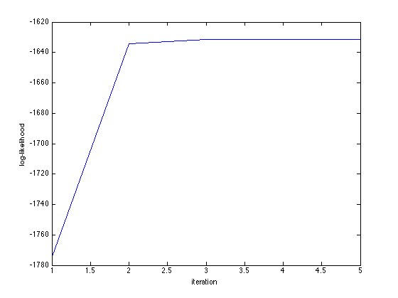
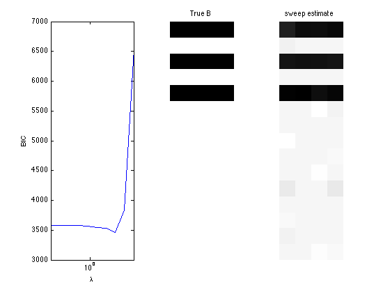
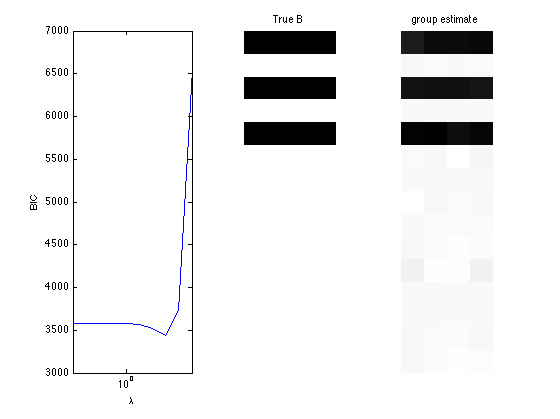
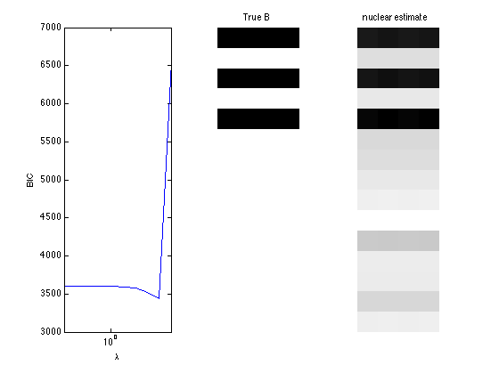

Multinomial-logit regression and sparse regression
A demo of Multinomial-logit regression and sparse regression
Contents
Generate multinomial random vectors from covariates
clear; % reset random seed s = RandStream('mt19937ar','Seed',1); RandStream.setGlobalStream(s); % sample size n = 200; % # covariates p = 15; % # bins d = 5; % design matrix X = randn(n,p); % true regression coefficients: predictors 1, 3, and 5 have effects B = zeros(p,d-1); nzidx = [1 3 5]; B(nzidx,:) = ones(length(nzidx),d-1); prob = zeros(n,d); prob(:,d) = ones(n,1); prob(:,1:d-1) = exp(X*B); prob = bsxfun(@times, prob, 1./sum(prob,2)); batchsize = 25+unidrnd(25,n,1); Y = mnrnd(batchsize,prob); zerorows = sum(Y,2); Y=Y(zerorows~=0, :); X=X(zerorows~=0, :);
Fit multinomial logit regression
tic; [B_hat, stats] = mnlogitreg(X,Y); toc; display(B_hat); display(stats.se); display(stats); % Wald test of predictor significance display('Wald test p-values:'); display(stats.wald_pvalue); figure; plot(stats.logL_iter); xlabel('iteration'); ylabel('log-likelihood');
Elapsed time is 0.065748 seconds.
B_hat =
0.9062 0.9845 0.9823 1.0066
0.0491 0.0174 0.0223 -0.0064
0.9543 0.9696 0.9683 0.9576
-0.0121 -0.0053 0.0275 0.0129
0.9871 1.0022 0.9483 0.9692
0.0010 -0.0019 -0.0619 0.0244
-0.0288 -0.0399 -0.0092 -0.0297
-0.0591 0.0135 -0.0068 0.0009
-0.0469 -0.0452 -0.0606 -0.0716
0.0122 -0.0213 -0.0476 -0.0115
0.0758 -0.0163 0.0003 0.0828
-0.0039 -0.0010 -0.0128 -0.0097
-0.0780 -0.0469 -0.0415 -0.0474
0.0318 -0.0152 -0.0228 0.0117
-0.0009 -0.0230 -0.0645 -0.0423
ans =
0.0430 0.0434 0.0434 0.0436
0.0454 0.0456 0.0455 0.0455
0.0420 0.0421 0.0421 0.0423
0.0415 0.0416 0.0414 0.0417
0.0441 0.0442 0.0438 0.0441
0.0381 0.0380 0.0380 0.0380
0.0380 0.0382 0.0380 0.0382
0.0387 0.0385 0.0385 0.0388
0.0378 0.0379 0.0378 0.0380
0.0397 0.0400 0.0401 0.0399
0.0433 0.0433 0.0430 0.0432
0.0427 0.0427 0.0426 0.0427
0.0411 0.0412 0.0412 0.0413
0.0387 0.0387 0.0387 0.0388
0.0398 0.0398 0.0398 0.0400
stats =
BIC: 3.5804e+03
AIC: 3.3825e+03
dof: 60
iterations: 5
logL: -1.6313e+03
logL_iter: [1x5 double]
prob: [200x5 double]
yhat: [200x5 double]
gradient: [60x1 double]
observed_information: [60x60 double]
H: [60x60 double]
se: [15x4 double]
wald_stat: [1x15 double]
wald_pvalue: [1x15 double]
Wald test p-values:
ans =
Columns 1 through 7
0 0.7611 0 0.8724 0 0.2120 0.8340
Columns 8 through 14
0.3342 0.3851 0.6591 0.0494 0.9974 0.4458 0.6268
Column 15
0.4288
 Fit multinomial logit sparse regression - - lasso/group/nuclear penalty
penalty = {'sweep','group','nuclear'};
ngridpt = 10;
dist = 'mnlogit';
for i = 1:length(penalty)
pen = penalty{i};
[~, stats] = mglm_sparsereg(X,Y,inf,'penalty',pen,'dist',dist);
maxlambda = stats.maxlambda;
lambdas = exp(linspace(log(maxlambda),-log(size(X,1)),ngridpt));
BICs = zeros(1,ngridpt);
LogLs = zeros(1,ngridpt);
Dofs =zeros(1, ngridpt);
tic;
for j=1:ngridpt
if j==1
B0 = zeros(p,d-1);
else
B0 = B_hat;
end
[B_hat, stats] = mglm_sparsereg(X,Y,lambdas(j),'penalty',pen, ...
'dist',dist,'B0',B0);
BICs(j) = stats.BIC;
LogLs(j) = stats.logL;
Dofs(j) = stats.dof;
end
toc;
% True signal versus estimated signal
[bestbic,bestidx] = min(BICs);
B_best = mglm_sparsereg(X,Y,lambdas(bestidx),'penalty',pen,'dist',dist);
% display MSE of regularized estiamte
display(norm(B_best-B,2)/sqrt(numel(B)));
figure;
subplot(1,3,1);
semilogx(lambdas,BICs);
ylabel('BIC');
xlabel('\lambda');
xlim([min(lambdas) max(lambdas)]);
subplot(1,3,2);
imshow(mat2gray(-B)); title('True B');
subplot(1,3,3);
imshow(mat2gray(-B_best)); title([pen ' estimate']);
end
Elapsed time is 0.298990 seconds.
ans =
0.0751
Elapsed time is 0.168264 seconds.
ans =
0.0638
Elapsed time is 0.225665 seconds.
ans =
0.1726
  